CSS Patterns
https://goo.gl/ymYKRr
GUSTAVO QUINALHA
Front-end developer na MonkVocê já passou por isso?
- Aonde estou?
- Para onde eu vou?
- O que essa classe faz?
- Qual o nome da variável?
- Qual era a cor mesmo?

Problemas mais frequentes com CSS
- Organização
- Legibilidade de código
- Nomenclatura
- Herança
- Lógica
- Repetição
Organização

Legibilidade de código
 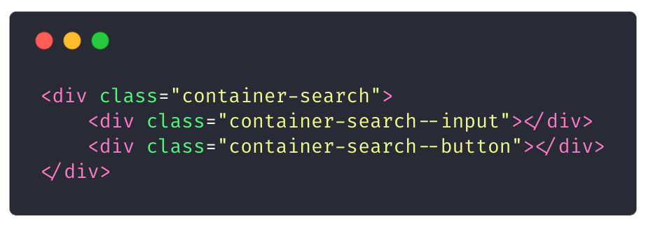
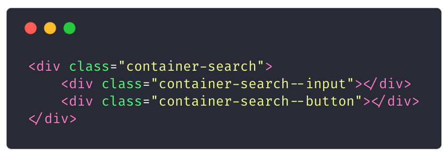
Nomenclatura
Nomenclatura
Herança !important
Lógica
Repetição
Alguma diferença?
Baseado em histórias reaisMaior o projeto, maior a treta!
Resolução
- Metodologias
- StyleLint
- Pré-processadores
- Styleguide/Design system
- Documentação
Metodologias
BEM CSS
Sigla para block, element, modifier – é uma metodologia com várias versões cujo o preceito de esclarecer o desenvolvedor mais sobre o markup através de suas classes. Este sistema permite escrever sites de maneira rápida, auto-explicativa e com manutenção descomplicada. Esqueça seus preconceitos com os caracteres duplos de hífen.
O grande trunfo do padrão é mesmo sugerir uma nomenclatura adequada para elementos descendentes.
BEM CSS
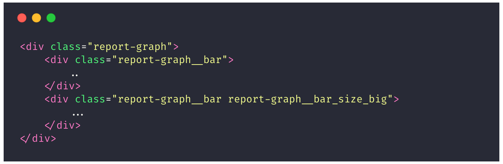 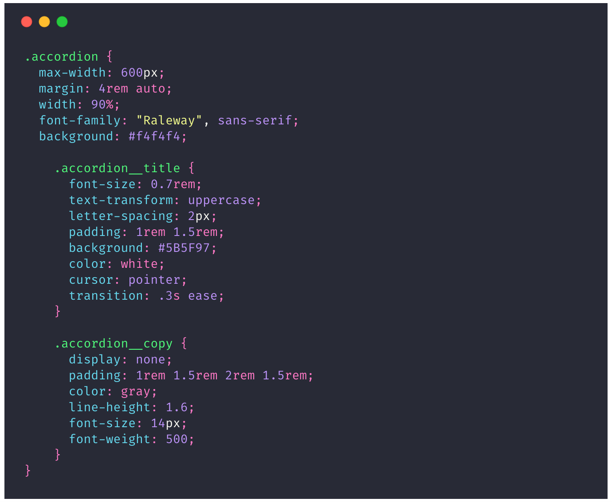RSCSS
A ideia principal dele é criar um componente pai, que irá governar os elementos internos a partir do child selector >, também chamado de seletor filho ou descendente.
A primeira coisa que você deve fazer é pensar em tudo como se fossem componentes.
Componentes devem ser criados de uma forma que possam ser reutilizados em diferentes contextos. Se você cria um objeto genérico, ele pode ser extendido/reutilizado e tudo que você criar tem um lugar específico para ficar.
RSCSS
ITCSS
A ideia do ITCSS é você montar uma arquitetura que consiga mitigar esses pequenos problemas do CSS. Seu nome por extenso é Inverted Triangle CSS. Que envolve basicamente visualizar todo o CSS em camadas, que montadas formam um triângulo de cabeça para baixo.
Essa organização hierárquica ajuda a organizar o CSS da forma mais efetiva, diminuindo conflitos e sobrescritas.
ITCSS
ITCSS
Atomic Design
Ele parte do pressuposto que as páginas na internet na realidade são sistemas, ou seja, conjuntos de elementos interconectados que formam um todo organizado. Inspirado pelas aulas de química do colegial Brad Frost percebeu que os componentes de uma página da internet se comportam de maneira muito parecida com a de átomos, moléculas e organismos.
Através desta metodologia podemos estabelecer um padrão para a criação de sistemas de design, com partes reutilizáveis com uma progressão lógica de montagem.
Atomic Design
A possibilidade de testar os átomos, moléculas e organismos em um ambiente real também garante que o seu produto final seja a prova de erros. Outra vantagem é a facilidade de mudanças e ajustes, diminuindo o impacto negativo de refações no fluxo de trabalho. Basta trocar a ordem ou combinação de elementos para criar novas páginas.
OOCSS
O conteúdo de um website geralmente é bem específico em cada uma das páginas. É pouco comum que o mesmo conteúdo se manifeste em diferentes seções de um projeto. Portanto, classes nomeadas com base no conteúdo são bastante difíceis de serem reusadas.
O estilo enfatiza a separação de propriedades de estrutura e de skin. Propriedades como background, color e border, quando fizerem parte da identidade visual do projeto, são consideras parte do skin e devem ser agrupadas em classes próprias.
OOCSS
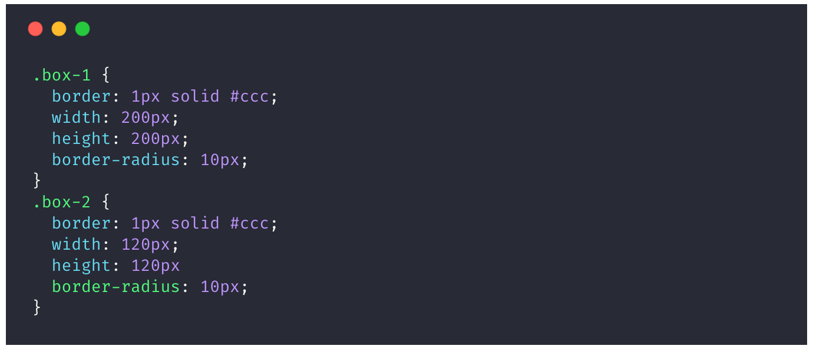 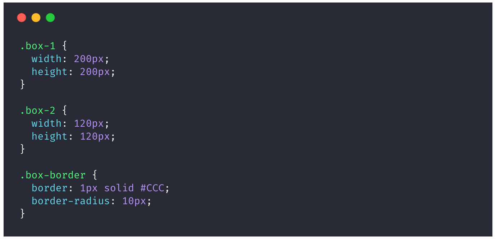DRY CSS
O princípio consiste em não repetir propriedades com mesmos valores em seu código. De maneira simples, a todo momento que isto for necessário, estas propriedades devem ser agrupadas e endereçadas por vários seletores.
A técnica, assim como outros sistemas, sugere que seu código seja pensando em termos de padrões de aparência.
DRY CSS
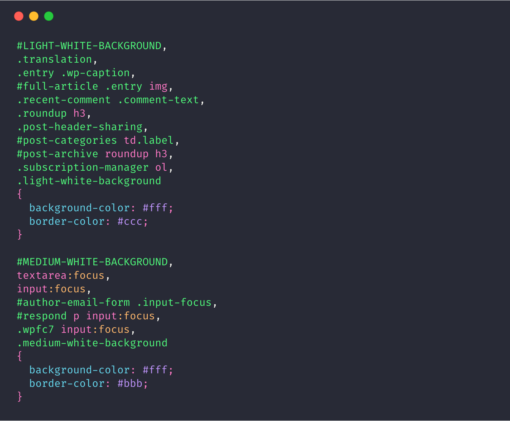SMACSS
O sistema estabelece e é bastante baseado em cinco categorias de regras de CSS: base, layout, module, state e a pouco importante theme.
O SMACSS é mais uma série de tutoriais de como escrever um bom código que propriamente um sistema de CSS. Não soluciona alguns desafios típicos do design de componentes de médio porte pois em nenhum momento endereça como nomear adequadamente elementos descendentes.
SMACSS
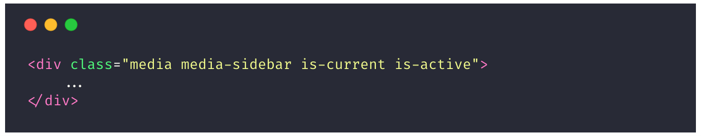StyleLint
- CLI
- Node API
- Webpack/Gulp/Grunt
- PostCSS plugin
- Editor plugin
Pré-processadores
- Variáveis
- Condicionais
- Repetição
- Imports
- Funções
- Mixins e extends
 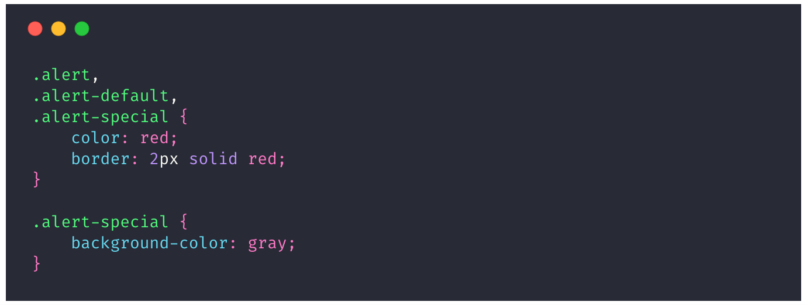
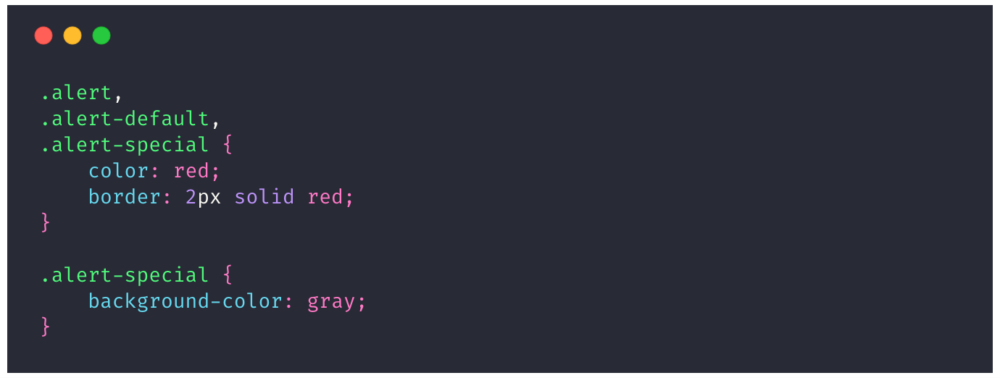
Styleguide/Design System
Uma série de referências de estilos, componentes e padrões de aplicação com o objetivo de comunicar a mesma mensagem por meio de diversas soluções, com várias tecnologias, de forma clara e consistente.
Exemplos
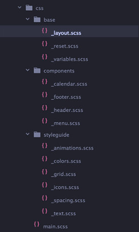Exemplos


Links
Minha metodologia
Github- Atomic Design + BEM + RSCSS + ITCSS + OOCSS
-
- Átomo
- Molécula
- Organismo
- Template
- Pages
- Block(Container) é responsável pelo comportamento dos elementos(Items).
Block -> Element -> Modifier
Block__Element_Modifier
Block__Element--Element_Modifier
PAI__FILHO
PAI__FILHO-e-PAI__FILHO
PAI__FILHO-e-PAI__FILHO_azul


Design Trends 2018
Cores vibrantes e gradientes
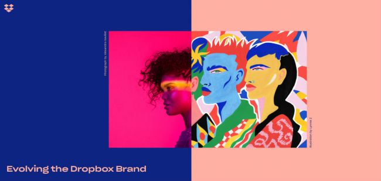
Semi-flat design
Desenhos e animações


Typografia

3D

Logos responsivas
Semi 3D
Micro interações